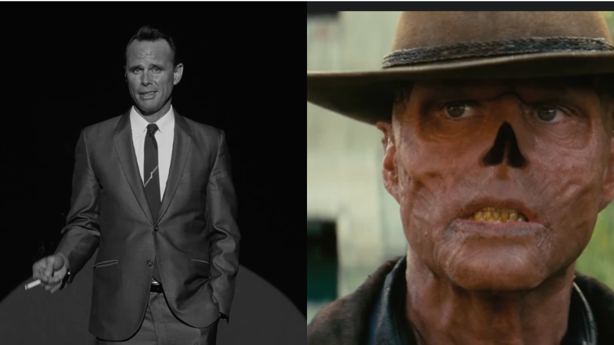
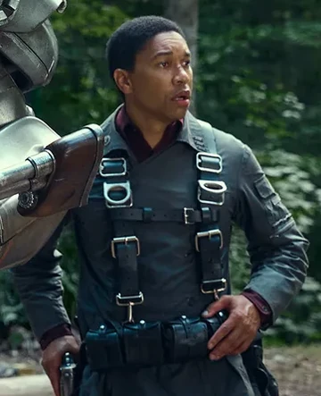

Fallout is a television series based on the video game series of the same name. It is set in the
world of Fallout and
is a new original story in the franchise, rather than a re-telling of any of the previous games. Licensed to
Amazon
Studios, the series was developed by Kilter Films, in association with Bethesda Game Studios and Bethesda
Softworks.
Fallout is set in 2296, 219 years after the Great War of 2077, which killed the vast majority of humanity in a
nuclear holocaust. It is also set 9 years after Fallout 4. It is heavily implied that Fallout begins near the
end of 2296, as a terminal mentions it is 2297 by episode 5, and Lucy (look) mentions while leaving Vault 4 she has only been on the surface for
two weeks. During the Great War, some citizens of pre-War America managed to
survive the war in Vaults, massive fallout shelters constructed by the Vault-Tec Corporation across the United
States, and Fallout focuses on their descendants.Lucy MacLean is a resident of one such Vault: Vault 33, located
in the ruined city of Los Angeles. She has spent her life underground and is currently applying to have a
husband from another Vault in an arranged marriage. After a tragic event involving a woman named Lee Moldaver,
Lucy decides to leave for the surface on a mission to save her father Hank. As she becomes accustomed to the
dangers of the wasteland, she encounters other characters including Maximus (look), a
young soldier in the Brotherhood
of Steel, as well as the Ghoul(look), a ghoulified
bounty
hunter.The protagonists' paths converge as they chase an
artifact from an enigmatic researcher nammed Siggi Wilzig which has the potential to reshape the power dynamic
of the entire wasteland. Other perspectives include that of pre-War Hollywood star Cooper Howard, the man who
became the Ghoul; as well as the continued story of Vault 33's dwellers after Lucy leaves on her journey, shown
through the perspective of her brother Norm MacLean.
Main characters
Lucy MacLean
Lucy MacLean is one of the protagonists of the Fallout TV series, the other two
being The Ghoul
and
Maximus. She is a dweller of Vault 33 in what was once Los Angeles, who decides to leave the Vault in
2296 on a mission to save her father Hank, the overseer, from a woman named Lee Moldaver.
The Ghoul, real name Cooper Howard. He worked as a film actor before the Great
War of 2077 and was transformed into a ghoul at some point in the years following it. By 2296, he has
established a reputation as one of the most fearsome bounty hunters in the west.

The Ghoul
Maximus
Maximus is a rookie soldier who grew up above ground but, like Lucy, was also
raised in a cloistered "family" of sorts: the Brotherhood of Steel. However, unlike Lucy, he has a
cynical sense of self-preservation and does not always act honorably.
He has recently been elevated to the rank of squire and is sent by the Brotherhood with his knight as an
expendable assistant. His mission leads him towards an artifact from an enigmatic researcher called
Siggi Wilzig, causing his path to collide with those of Lucy and the Ghoul.

Maximus
Casting
Walton Goggins joined the cast in February 2022 in a lead role, portraying a ghoul character. Ella Purnell was
cast in March. In June, Kyle MacLachlan, Xelia Mendes-Jones and Aaron Moten were announced as being part of the
cast. An IMDb posting in September 2022 revealed the casting of Charlie Besso as "Tommy," in addition to Aaron
Moten's character being named "Maximus." It also revealed the casting of Michael John Benzaia and Michael
Emerson, the latter specifically by way of a stuntman.
{kind=link}
{kind=link}